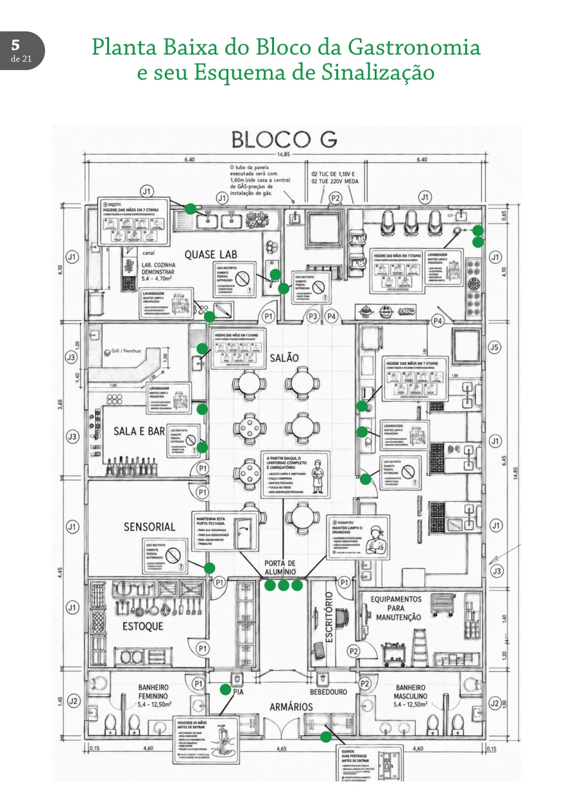

Laboratórios.
A cozinha é parte da sala de aula. Conheça os espaços de formação prática e o manual que organiza o trabalho e a convivência na Gastronomia do IFF.
Explorar o manual
Conheça o laboratório por dentro.
A planta integra o Manual do Laboratório de 2026 e identifica ambientes, bancadas, circulação e sinalização pedagógica.

Ampliar planta ↗O que você precisa saber.
Consulte os assuntos abaixo para conhecer os procedimentos e normas do laboratório. Conteúdo organizado a partir do manual elaborado para o Campus Cabo Frio.
01Espaços de aprendizagem
Cozinha pedagógica, salão didático e área de apoio
As aulas práticas utilizam a Cozinha Pedagógica, o Laboratório de Restaurante (Salão Didático) e a área de apoio, com banheiros e armários para troca de uniforme e guarda de pertences.
Mantenha os corredores sinalizados livres, evite deslocamentos desnecessários durante o preparo e entregue os ambientes limpos ao próximo grupo.
02Sinalização
Placas, avisos e circulação
As placas são posicionadas próximas ao ponto de ação, antecipam comportamentos de risco, repetem orientações essenciais e preservam a leitura visual sem bloquear portas ou equipamentos.
A planta baixa mostra os pontos de sinalização, a circulação e a distribuição dos espaços.
03Acesso e guarda de pertences
Armários, chegada e entrada na cozinha
Mochilas, bolsas e objetos pessoais não entram nas áreas de laboratório. Guarde-os nos armários da área de apoio, compartilhados por dois ou três estudantes e desocupados ao fim da aula.
Chegue com antecedência, vista o uniforme, guarde seus materiais, higienize as mãos, dirija-se ao salão didático e aguarde o professor.
A entrada na cozinha só ocorre com autorização docente. Mantenha a porta do salão fechada; se chegar atrasado, aguarde orientação.
04Bancadas e equipes
Divisão de tarefas e responsabilidade
Os estudantes são organizados em bancadas com aproximadamente cinco integrantes. Cada equipe deve repartir tarefas, praticar diferentes técnicas e organizar o fluxo de trabalho.
As equipes não devem ser compostas exclusivamente por afinidade pessoal. Comunicação, rodízio de funções e limpeza contínua fazem parte da formação profissional.
05Fichas técnicas
Leitura, produção e registros
As fichas orientam as atividades e indicam preparação, ingredientes, utensílios, equipamentos, modo de preparo e armazenamento.
Leia a ficha antes da aula. Registre dúvidas, variações de tempo e observações sensoriais e informe possíveis correções ao professor.
06Uniforme
Vestuário para atividades práticas
São obrigatórios proteção para o cabelo, dólmã branco de cozinheiro, calça carijó de algodão, avental branco de cintura e sapato fechado antiderrapante.
O manual prevê uma alternativa provisória enquanto o estudante ainda adquire o uniforme: camisa branca, calça jeans, proteção descartável para a cabeça, avental de cintura e sapato fechado.
O uniforme deve estar limpo e ser higienizado separadamente. O estudante sem vestimenta adequada não participa da prática, conforme as regras do manual.
07Higiene pessoal
Hábitos e higienização das mãos
O manual exige higiene pessoal, unhas curtas sem esmalte, barba retirada ou aparada, ausência de perfumes e retirada de anéis, relógios, pulseiras e brincos.
Higienize as mãos no início da atividade e sempre após contato com alimentos crus, lixo, superfícies contaminadas ou uso do sanitário. A técnica descrita contempla palmas, dorsos, dedos, polegares, pontas dos dedos e punhos.
08Celulares
Uso em aula e registros pedagógicos
O uso de celular no laboratório é proibido como regra geral. Fotografias para fins pedagógicos exigem autorização prévia do professor.
Quando houver autorização, siga as orientações de higienização e higienize novamente as mãos antes de retomar o contato com alimentos.
09Materiais pessoais
Utensílios do estudante
O kit descrito no manual contém pedra de afiar dupla face, chaira, descascador, faca de chef de oito polegadas e faca de legumes.
Transporte facas em estojo ou maleta com proteção das lâminas. Identifique os utensílios pessoais para evitar trocas; os itens não devem ser compartilhados.
10Pré-preparo
Mise en place e conferência
Antes da cocção, confira equipamentos, utensílios e ingredientes. Leia a receita completa, separe e pese ingredientes e mantenha os equipamentos prontos para uso.
A produção só deve começar quando esses elementos estiverem disponíveis e organizados.
11Durante a produção
Limpeza contínua e segurança
Mantenha a bancada limpa, organize utensílios, descarte resíduos corretamente e respeite o fluxo da equipe.
Ao usar fogões e fornos, mantenha cabos das panelas voltados para dentro e afaste panos das fontes de calor.
12Limpeza e encerramento
Responsabilidade da bancada e da turma
Cada bancada higieniza os utensílios e equipamentos utilizados. A turma inteira é responsável pela organização do ambiente; a lavagem do piso aparece como exceção no manual.
A sequência recomendada para utensílios é retirada de resíduos, lavagem com detergente, enxágue e sanitização conforme orientação.
Ao final, todos verificam o desligamento dos equipamentos e do sistema de gás e deixam cozinha e salão organizados.
13Intervalos
Revezamento e alimentação
Não devem sair todos os integrantes da bancada simultaneamente durante preparações em andamento. Organize revezamentos e mantenha ao menos uma pessoa responsável.
Caso todos precisem sair, alimentos e preparações devem estar devidamente cobertos ou refrigerados. A alimentação deve ocorrer apenas na área designada, fora do laboratório.
14Responsabilidade coletiva
Cuidado com o espaço público
O laboratório é espaço de treinamento profissional utilizado por várias turmas. Organização, higiene, técnica e preservação são responsabilidades compartilhadas de estudantes e professores.
Versão de referência: Manual do Laboratório de Gastronomia, 2026. Texto reorganizado por assunto para leitura na web. Em caso de atualização das normas, prevalece a orientação institucional vigente.